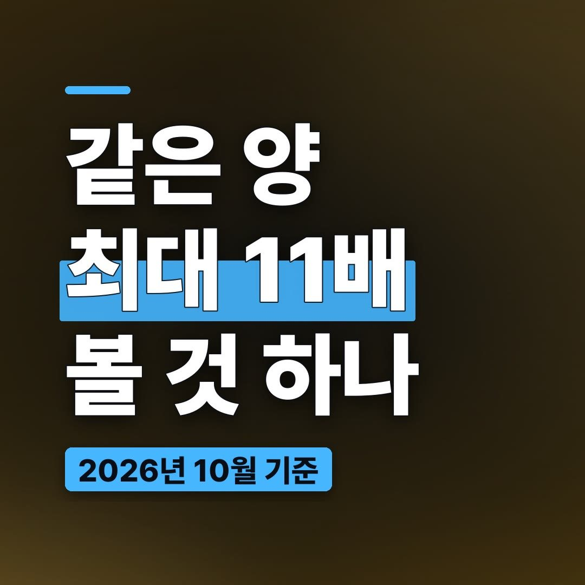
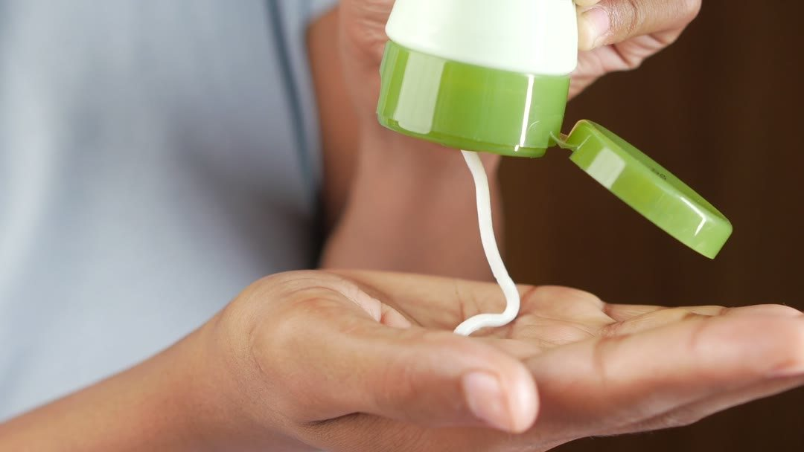
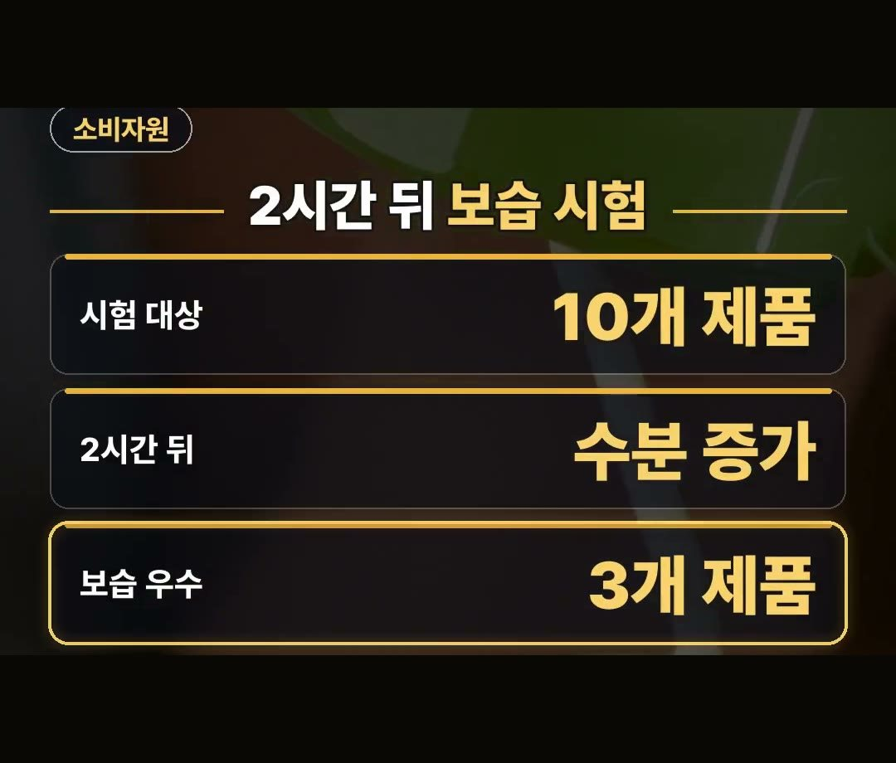
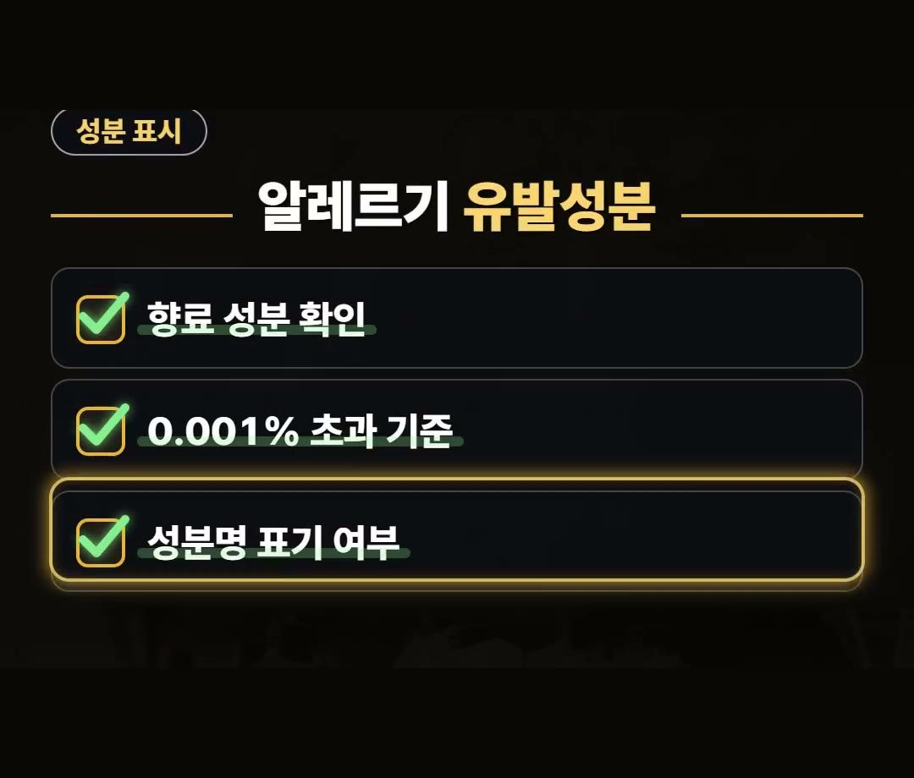
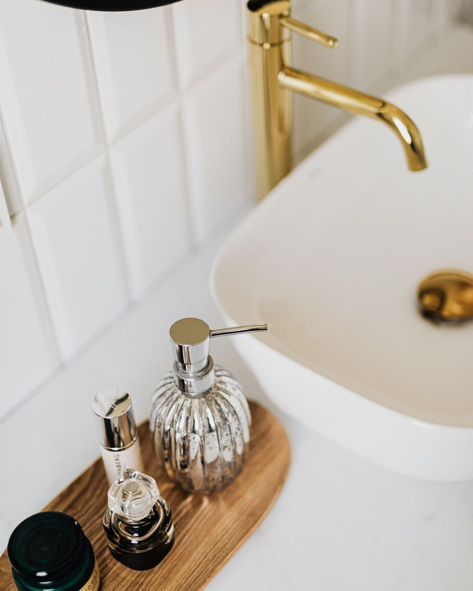
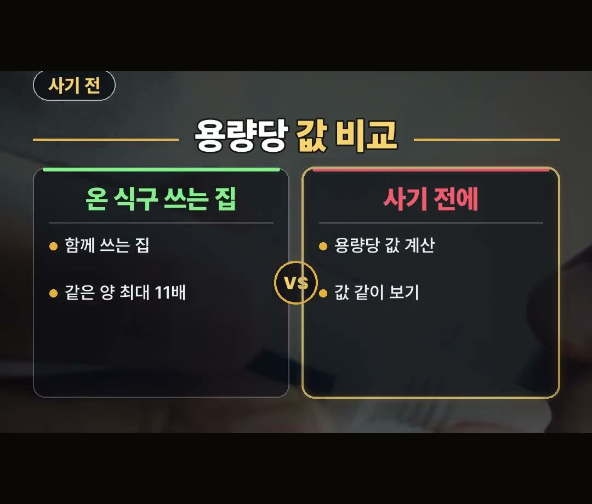

핸드크림 추천 전에 볼 것, 같은 양인데 값은 최대 11배 차이
※ 이 글에는 제휴 링크가 포함되어 있으며, 링크를 통해 구매하시면 일정 수수료를 받을 수 있습니다. (가격은 같습니다)
※ 이 포스팅은 쿠팡 파트너스 활동의 일환으로, 이에 따른 일정액의 수수료를 제공받습니다.
※ 이 콘텐츠는 토스쇼핑 쉐어링크 활동의 일환으로, 링크를 통한 구매가 발생하면 일정 수수료를 지급받습니다.
핸드크림 추천을 알아보게 되는 요즘 같은 계절에는 손이 쉽게 건조해져서 관련 제품을 찾는 분들이 많아집니다.
이번 글에서는 사기 전에 용량당 값과 성분 표시, 이 2가지를 같이 보면 좋은 까닭을 한국소비자원 시험 자료로 정리했습니다.

★아낌 소장의 한마디★ 2023년 한국소비자원 시험 자료를 보면 10개 제품 모두 바른 지 2시간 뒤 수분 함유량이 사용 전보다 늘었어요.
그래서 용량당 값과 성분 표시를 중심으로 정리해 봤어요. 💧
핸드크림 가격, 최대 11배 차이
핸드크림 추천 제품들을 살펴보면 통 크기도 값도 제각각입니다.
2023년 한국소비자원이 10개 제품을 시험한 자료를 보면, 10밀리리터당 가격이 제품 간 최대 11배 차이가 났습니다.
한 통 값이 아니라 같은 용량으로 맞춰 놓고 견준 값의 차이예요.
다만 이 자료가 값이 높은 제품이 더 낫다, 아니다를 말해 주는 것은 아닙니다.
제품 사이에 값이 얼마나 벌어져 있는지를 보여 주는 자료로 읽으면 됩니다.
제품마다 용량이 다르기 때문에 값표만 봐서는 견주기 어렵습니다.
판매가를 용량으로 나눠 10밀리리터당 값으로 맞춰 보면 같은 기준으로 견줄 수 있어요.
2시간 뒤 보습 시험 결과

같은 시험에서는 보습도 함께 살펴봤습니다.
2023년 소비자원 시험 결과를 보면 10개 제품 모두 바른 지 2시간 뒤 수분 함유량이 사용 전보다 늘었습니다.

- 시험 대상: 10개 제품 (2023년 한국소비자원)
- 2시간 뒤: 10개 제품 모두 수분 함유량 증가
- 보습 유지 상대적 우수: 3개 제품
이 중에서 보습 유지가 상대적으로 우수한 제품은 3개였습니다.
10개 모두 늘었다는 결과는 바른 지 2시간 뒤에 잰 것이고, 3개 제품은 「상대적으로」 우수했다는 점을 같이 기억해 두면 좋습니다.
향료 속 알레르기 유발성분 확인 방법

핸드크림 추천 목록을 살필 때는 성분 표시도 함께 확인해 보는 것이 좋습니다.
향료 속 알레르기 유발성분이 0.001% 초과면 성분명을 표기해야 합니다.
포장 상자에 표시가 잘 되어 있는지 살펴보세요.
- 향료 성분 확인
- 0.001% 초과 기준
- 성분명 표기 여부
향에 민감한 분이라면 사기 전에 포장 상자의 성분 칸을 먼저 읽어 보는 것도 방법입니다.
자주 바르거나 온 식구가 쓸 때 고르는 점

자주 손을 씻고 수시로 바르는 분이면 한 통 값만 보지 말고 용량당 값을 같이 보는 것이 좋습니다.
온 식구가 함께 쓰는 집도 마찬가지입니다.

제품 간 값 차이가 큰 만큼, 많이 쓰는 집일수록 한 통 값보다 용량당 값이 견주기 쉬운 기준이 됩니다.
사기 전에 판매가를 용량으로 나눠 용량당 값을 계산해 보세요.
이 시험 자료를 읽을 때 기억할 점
이 글은 특정 제품을 추천하거나 순위를 매기는 글이 아니에요.
2023년에 10개 제품을 시험한 자료라서, 지금 팔리는 제품 전체를 말해 주지는 않습니다.
값이 보습 결과와 어떻게 이어지는지는 이 글에서 다루지 못했어요.
그래서 용량당 값, 보습 시험 결과, 성분 표시를 따로따로 확인하는 편이 좋습니다.
정리
- 2023년 한국소비자원 시험에서 핸드크림 10개 제품의 10밀리리터당 가격은 제품 간 최대 11배 차이가 났습니다.
- 10개 제품 모두 바른 지 2시간 뒤 수분 함유량이 사용 전보다 늘었고, 보습 유지가 상대적으로 우수한 제품은 3개였습니다.
- 향료 속 알레르기 유발성분이 0.001% 초과면 성분명을 표기해야 하니 포장 상자를 확인해 보세요.
- 자주 바르거나 온 식구가 함께 쓴다면 한 통 값과 함께 용량당 값을 같이 보는 것이 좋습니다.
영상 속 상품 안내
영상 끝에 나온 상품은 소비자원 시험 결과와 관계없이 소개한 상품이에요.
시험 결과와는 따로 봐 주세요.
상품 설명에 따르면 고보습 60밀리리터 5개 구성입니다.
제품 링크는 아래에 모아 두었어요.
📌 2023년 한국소비자원 시험 자료를 2026년 10월에 정리한 글이에요. 지금 판매가와 제품 구성은 다를 수 있어요.
· korea.kr
사진·영상영상 화면: Pexels (MART PRODUCTION, Pavel Danilyuk, ROMAN ODINTSOV, Ron Lach, Towfiqu barbhuiya, alleksana)
사진: Pexels (mearlywan, kaboompics.com, Serkan Dinç)